Book folding has one technique. You fold the sheet where the mark indicates, you move on, you repeat. That part is identical in the simplest design and in the most elaborate one.
The result is a different story. A book can end up as a clean geometric pattern, a name readable from across the room, or a butterfly with eight colors and shadows in it. Same gesture with your hands, results that have nothing in common.
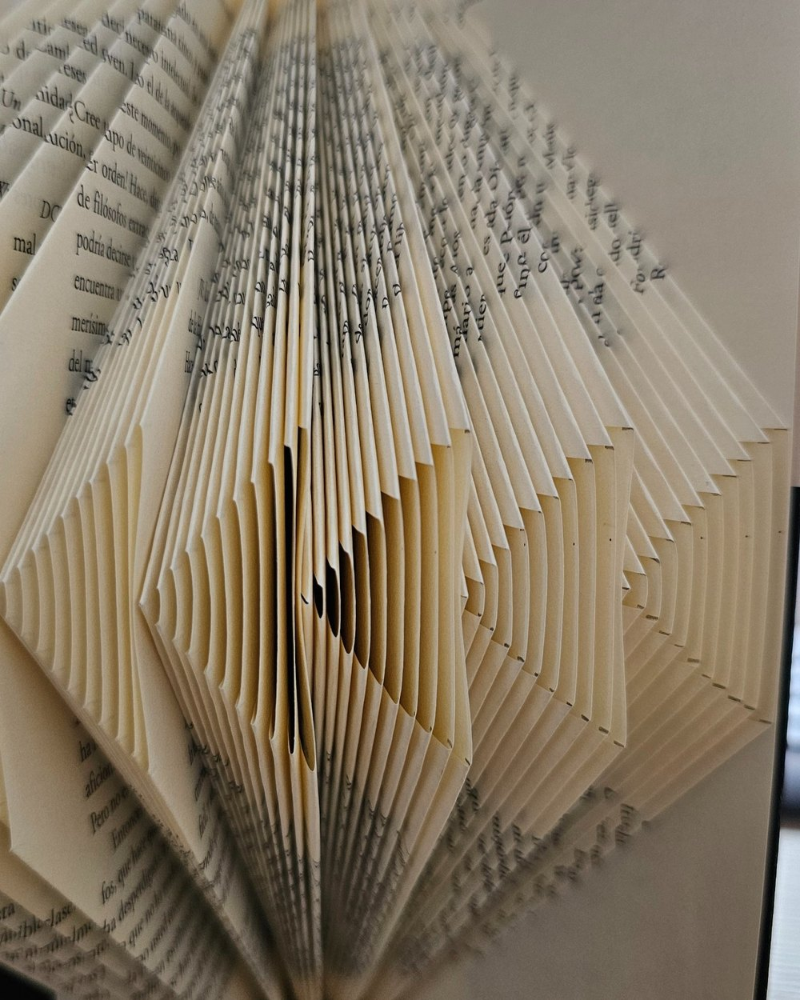
What separates one kind from another is not how hard it is to fold. That is decided by the number of pages. It is how hard it is to design. Working out where each mark goes, on which sheet and at what height, is where the real work lives.
Here are the eight kinds, from the simplest to design to the most complex.
1. Geometric patterns
Pure shapes, with no recognizable figure in them. It works as an object, not as a message. The result looks ordered, almost architectural, and the paper gets to be the star because there is nothing else competing for attention.
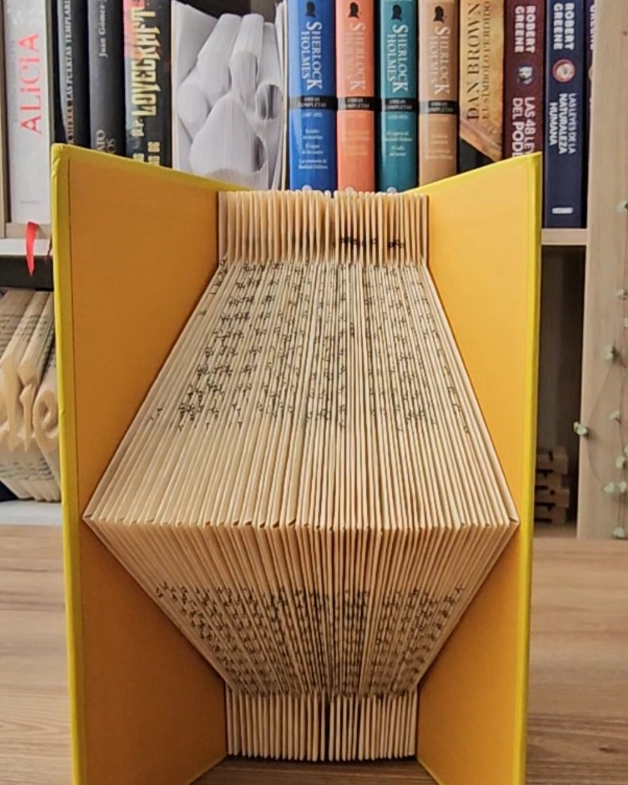
Design complexity: low. It is mathematical repetition. Once you define the progression, the rest of the measurements calculate themselves.
2. Symbols
A closed, usually symmetrical figure that carries meaning without having to explain itself. It reads instantly, and it tends to sit well in a space where you want calm rather than noise.
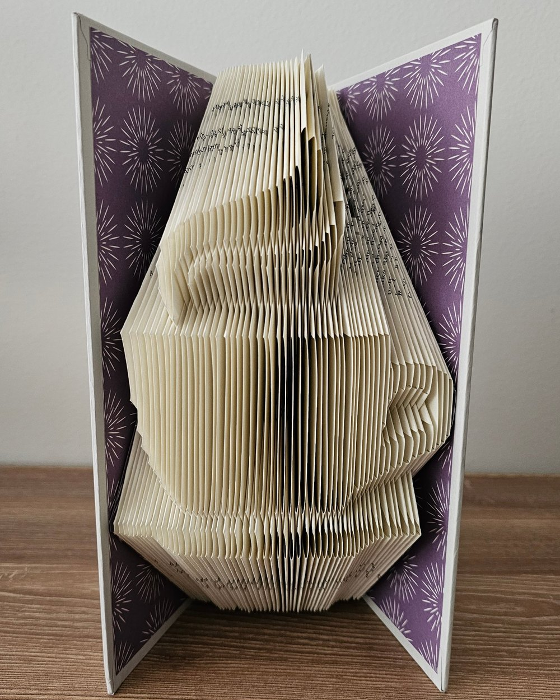
Design complexity: low to medium. Symmetry helps, because half the work mirrors itself. Closed curves are what force you to fine tune the measurements so the shape does not distort.
3. Logos
Recognizable instantly, even from across a room. This is the kind that gets the strongest immediate reaction from whoever receives it, because the brain identifies it before it processes what it is looking at.
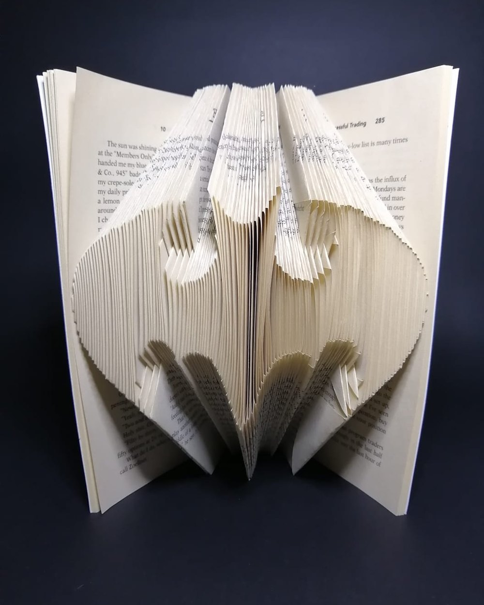
Design complexity: medium. The margin for error is tiny. Everybody already carries the proportions of a well known logo in their head, so any deviation is noticed.
4. Words
A message written in folded paper. The letter is built by the relief, the raised block of paper that comes forward out of the book. The hollows carved into that relief are what give each letter its specific detail.
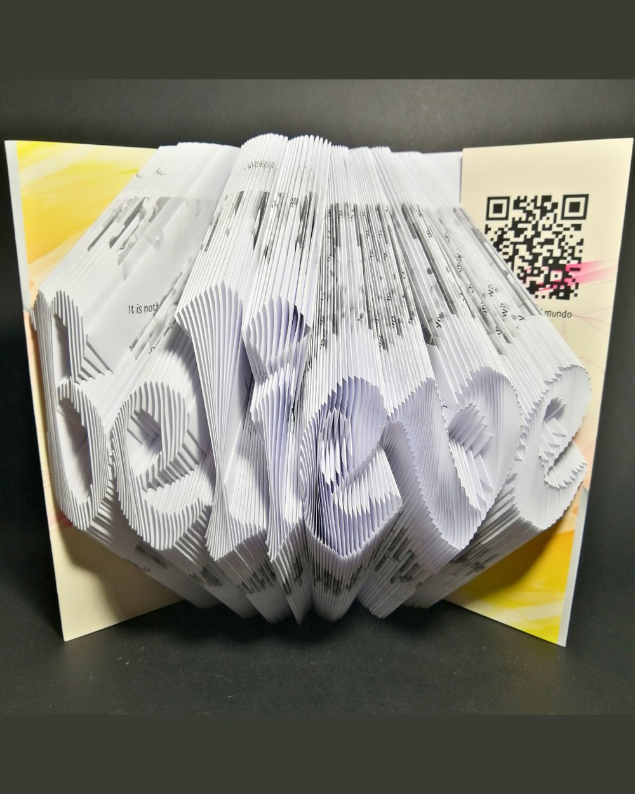
That combination of relief and hollow is also what makes it possible to reproduce a particular typeface, not just a generic letter shape. The curve of a lowercase letter, the weight of a serif, the slant of an italic, all of it can be built out of paper.
Design complexity: medium. Legibility and spacing have to be solved at the same time. Letters with enclosed counters are the ones that complicate the calculation.
5. Names
The most personal design there is. Nobody else owns that book, and that is exactly what turns it into a gift rather than a decoration.
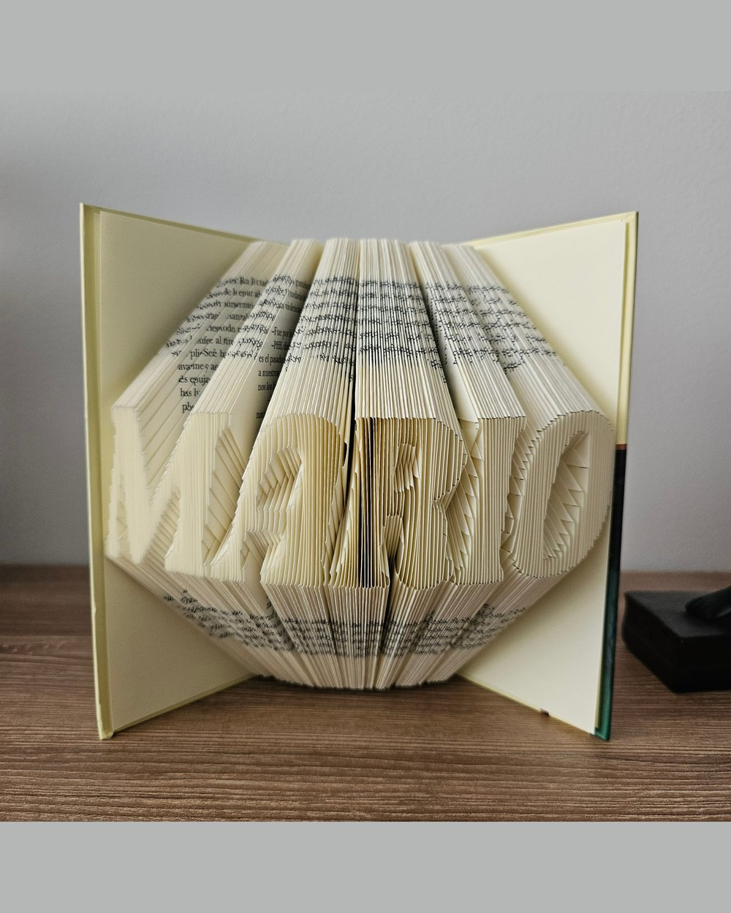
It is also the one people hold on to longest. A figure can go out of fashion with a room. A name does not.
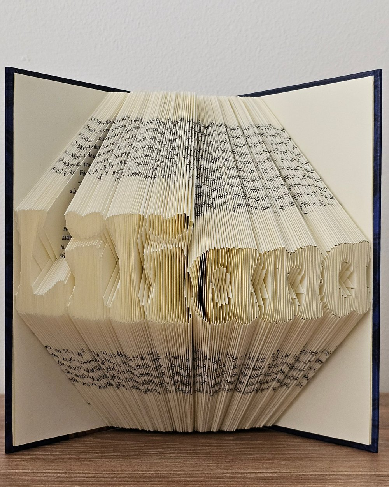
Design complexity: medium to high. Every name is a new design from zero. There is no template to reuse, and the length of the name decides how many pages the book needs before you can even start.
6. Silhouettes
A solid figure that reads from a distance through its outline. It is the most versatile kind and the one that ages best on a shelf, because it does not depend on a trend or a reference to work.
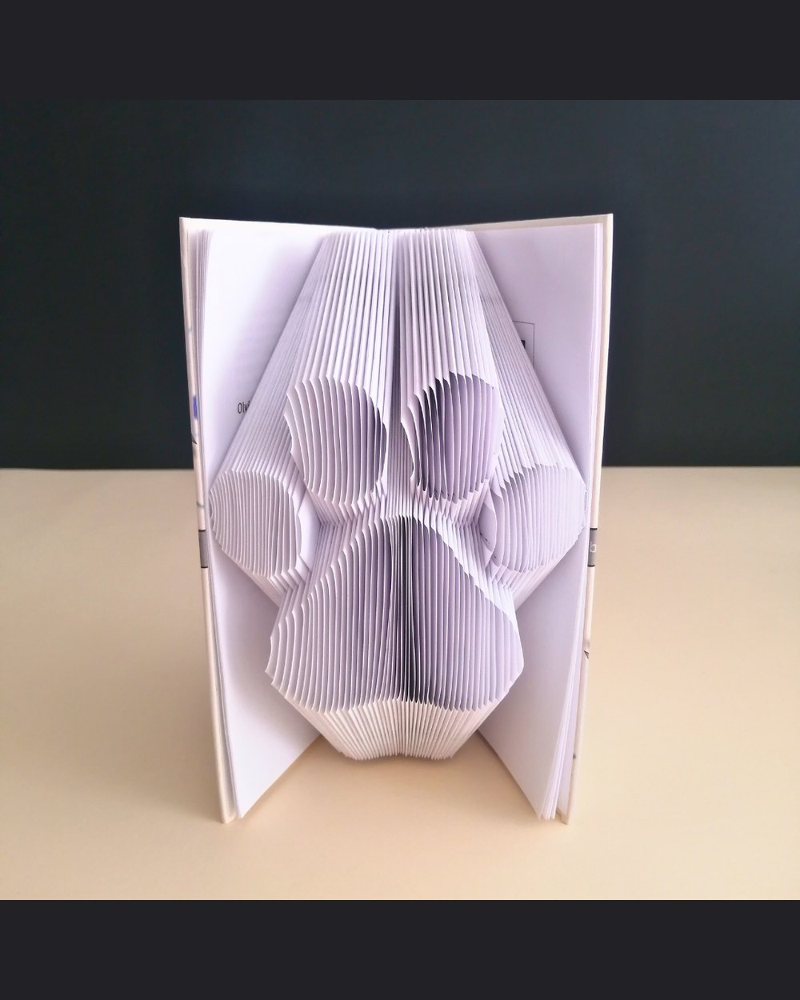
It also works in any finish. The same outline can stay white and live on the relief alone, or sit against a colored endpaper and read almost like a stamp.
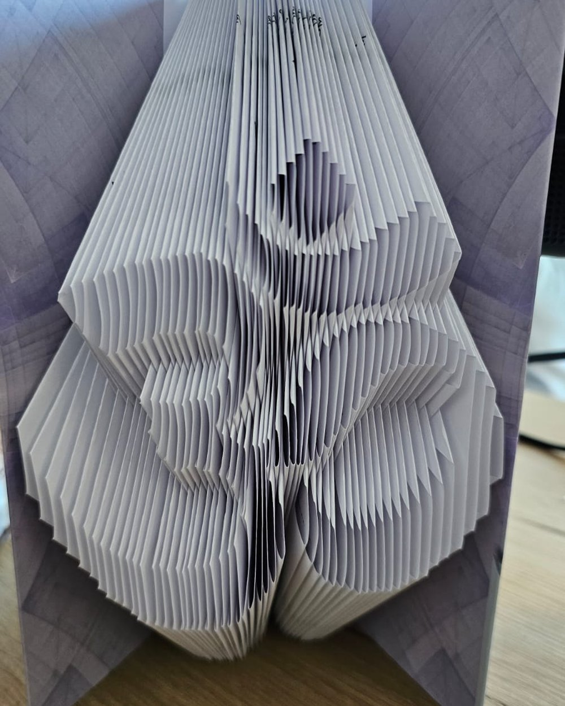
Design complexity: medium. The challenge is getting the outline to survive being translated into strips of paper. Fine detail disappears, so you have to simplify without the figure losing what makes it recognizable.
7. Color silhouettes
The same solid figure, now in flat color. It gains presence, and it stops reading as craft and starts reading as a decorative piece.
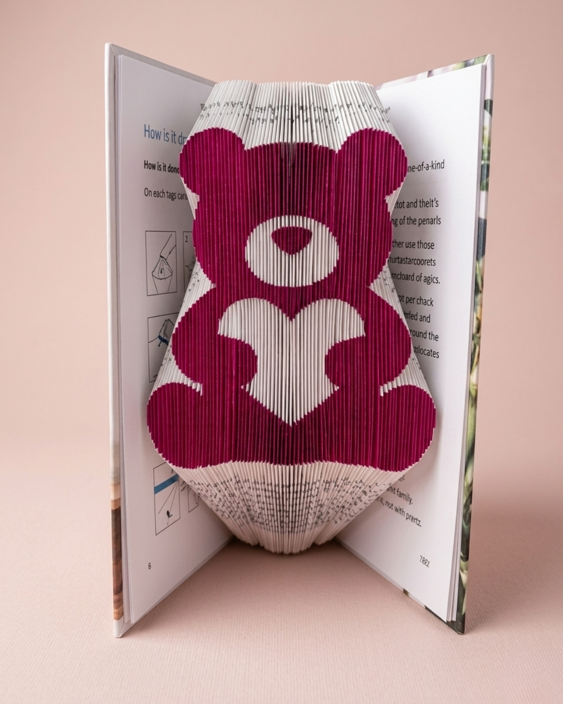
Color also widens who a design is for. The same shape in white reads as minimal, and in a saturated tone it reads as playful, without a single change to the folding.
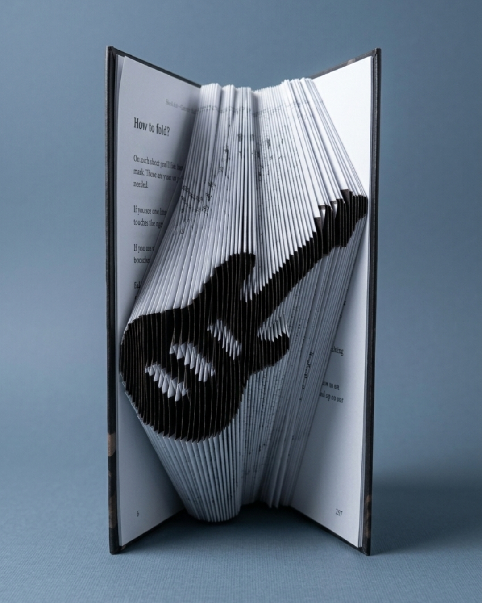
Design complexity: high. On top of the outline, you have to decide where each tone starts and stops and mark the sheets accordingly. Every color region multiplies the calculation.
8. Detailed color figures
The ceiling of the technique. Gradients, shadows, internal texture. From a distance it looks like an illustration. Up close you can see it is sheets of paper.

The Stained Glass Fox moves from deep crimson through burning orange into gold. The Stained Glass Owl does the same across a whole palette of greens and blues. In both cases the color is not painted on afterwards, it is printed into the book so that folding assembles it.

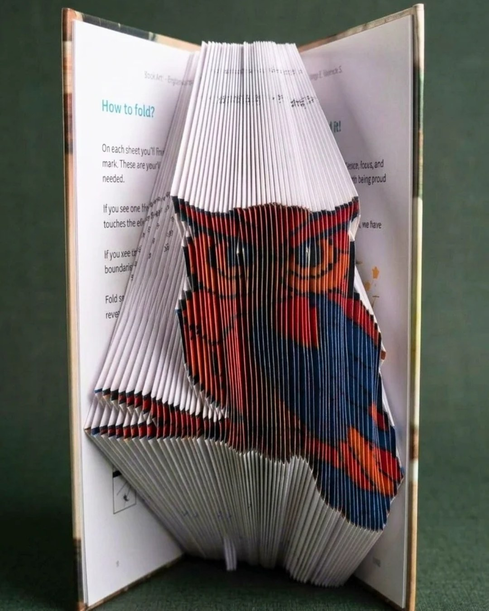
Design complexity: very high. A single sheet can carry several marks in different colors. It is the kind that takes the longest to design, and the one that shows the widest gap against any other book folding on the market.
Every BookArt design in one place, filtered by type and by occasion.
Browse the collection →So which kind should you pick?
There is no best one. A geometric pattern can sit better on a minimal desk than a color butterfly, and a name will beat any figure when the point is to give it to someone.
The question is not which one is hardest. It is what you want that person to see when they are holding it.
Frequently asked questions
Every design comes pre marked and ready to fold, with no experience, no tools and nothing to measure.
Shop all designs on Amazon ↗